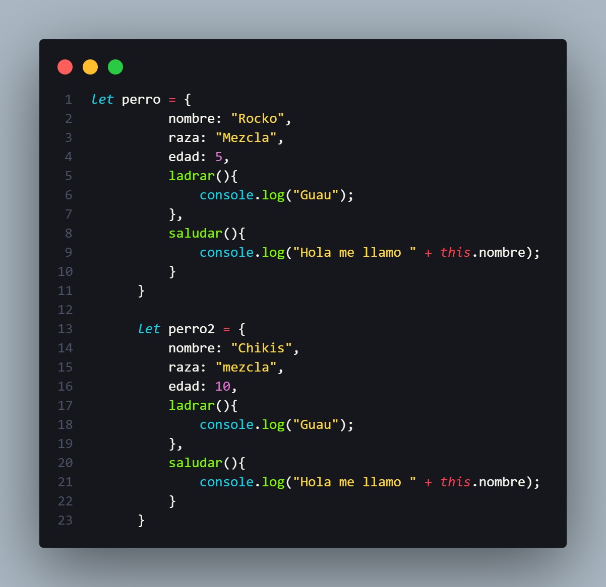

El metodo this.object nos ayuda a trabajar con cada objeto creado inependientemente del nombre de este
nos facilita el uso de multiples objetos y referirnos a ellos

Aqui podemos ver el ejemplo,
el This se refiere a cada instancia
propia del objeto en cuestion donde se use,
en el caso de que se creara otro objeto llamado gato
pero fuera una clase este metodo llamado ladrar podria ser
una incidencia de polimorfismo